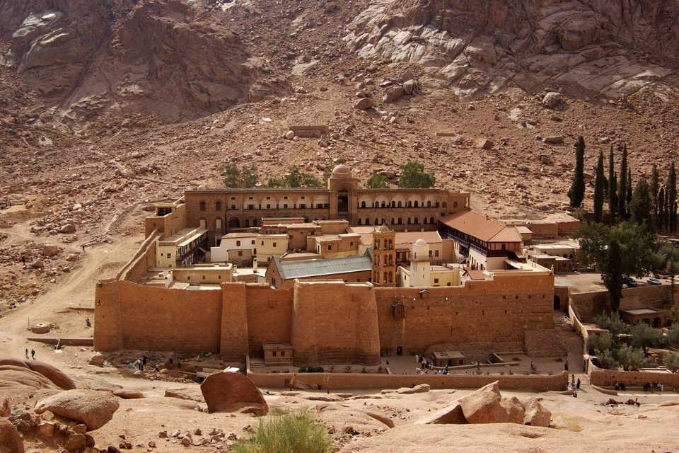

Egypt · Sinai
Saint Catherine's Monastery audio guide
8 stops · 15 min
Billed in ZAR
Unlocks in this browser after payment.
A sixth-century fortress around the Burning Bush. Listen here, or get the Earwise app to play as you walk.
Stops
- 1
Outside the walls
Outside the west wall of the monastery, below the granite ramparts. This is stop 1 on the route.
Play0:00 / –:––Read along
Stand back and look at the walls. They are granite, between ten and twenty metres high, and two to three metres thick. They were raised in the sixth century, on the orders of the emperor Justinian. The monastery names the architect as Stephanus of Aila, the old name for Eilat.
This is one of the oldest Christian monasteries in the world. UNESCO says it is the oldest that has kept its first purpose. Greek Orthodox monks have lived here for nearly fifteen centuries.
Why build a fortress here? Monks and hermits had gathered in these mountains long before. In 330, tradition says, Saint Helena, mother of the emperor Constantine, raised a little church where the Burning Bush grew. She added a tower where the monks could shelter. Two centuries later, Justinian enclosed that holy ground inside these walls.
Look along the west wall for an old doorway, long since blocked up. Above it, the monastery says, a verse from the Psalms is cut into the stone. The words are hard to read except in the best light. In plain words, it calls this the Lord's own gate, through which the righteous pass. Above the door was a covered window, so defenders could drive off anyone trying to break it down.
For centuries there was no simple way in. The monastery says you came through a guarded tunnel, or were hauled up in a basket lowered from the north wall. People and supplies are said to have gone up by rope and pulley during raids between the fifteenth and seventeenth centuries. The present west entrance, with its three steel-clad doors, dates from around 1862.
The monastery was not named for Catherine at first. She was a martyr of Alexandria in the early fourth century. Tradition tells that angels carried her body to the summit of the mountain named after her. There, monks are said to have found her relics in the ninth century, and brought them down to the basilica. From then on, this became Saint Catherine's Monastery.
The monks have long had neighbours. The local Gebeliya Bedouin trace their families to the people Justinian sent to build and guard this place. Today, a Gebeliya guide says that those families stayed on, married into local tribes, and have lived here ever since.
- 2
The north gate and Moses' Well
In the courtyard just inside the north gate, beside the stone well. This is stop 2 on the route.
Script and audio included when you buy - 3
The Basilica of the Transfiguration
Inside the main church of the monastery, the Basilica of the Transfiguration. This is stop 3 on the route.
Script and audio included when you buy - 4
The Burning Bush
Behind the basilica, at the bush growing beside the east end of the church, near the Chapel of the Burning Bush. This is stop 4 on the route.
Script and audio included when you buy - 5
The icons
Near the sacristy at the end of the visitor route, where some of the monastery's treasures can be seen. This is stop 5 on the route.
Script and audio included when you buy - 6
The library and Codex Sinaiticus
In the courtyard near the south wing, which houses the library. The library itself is not open to visitors. This is stop 6 on the route.
Script and audio included when you buy - 7
The mosque and the Prophet's letter
In the courtyard opposite the basilica, near the small mosque and its minaret. This is stop 7 on the route.
Script and audio included when you buy - 8
The garden, Saint Tryphon and the ossuary
Outside the walls, in the monastery garden by the Chapel of Saint Tryphon. This is stop 8 on the route.
Script and audio included when you buy
On the map
All 8 stop pins for this guide are marked. Open map